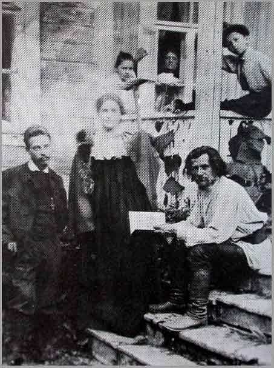

里尔克的俄语诗歌
深受曾经的未婚妻瓦勒丽•封•大卫—龙菲尔德的舅舅尤利乌斯•泽耶尔的影响，对俄罗斯充满神往；深深迷恋着俄罗斯将军的千金莎乐美并随之两次游历俄罗斯，里尔克学习了一些俄语，开始翻译包括《伊戈尔出征记》（Слово о пълку Игоревѣ）在内的俄语作品。此间，他甚至尝试用俄语写作诗歌。
里尔克在1900年11月29日到12月7日的日记里记录了六首俄语诗，1931年其女儿、女婿编辑出版的《书信与日记：1899–1902》中将俄语转写拉丁字母首次刊出这六首诗（后于1942年出版的《早年日记》中用俄语刊出，并附上当时颇具盛名的俄语翻译家Arthur Luther的德语散文体译文）。而后，学者索菲•布鲁策（Sophie Brutzer，1905–1945）最先又从里尔克遗物中找到的夹在一本书里的纸片，上面有两首俄语诗歌草稿（落款为1901年4月11日）。索菲•布鲁策在其1934年出版的《里尔克的俄罗斯之旅》中首次用俄语刊行并德语翻译了全部八首。而后，人们在莎乐美的遗物中发现里尔克写给莎乐美的六首俄语诗手稿（即日记中的六首）。1961年，《里尔克全集》第四卷出版，将给莎乐美的手稿、日记稿以及两首草稿一并刊行。
里尔克俄语诗，莎乐美的评价是“虽然语法上捉襟见肘，但却有着不可思议的诗性”（Lou Andreas-Salomé, Rainer Maria Rilke. Im Insel-Verlag, Leipzig, 1928. S. 90）。也就是说，由于里尔克本人的俄语水平局限，阅读其俄语诗时必然存在歧义与障碍。1947年，Samson Soloveitchik与Everett Bushnell Gladding两位学者甚至撰文详细分析了索菲•布鲁策的俄语版本，文中涉及了里尔克的语病，但无疑也包含了索菲•布鲁策的不信任（其中一稿甚至以《书信与日记：1899–1902》中的拉丁字母转写为底本）。而今，比对上述诸家版本，多处俄语拼写大相径庭，《全集》中甚至出现了非俄语字母。唉，Dasha是多么渴望能够目击里尔克的手稿啊。
底本：Rainer Maria Rilke, Sämtliche Werke. Bd. 4. Hrsg. vom Rilke-Archiv in Verbindung mit Ruth Sieber-Rilke, besorgt durch Ernst Zinn. Insel Verlag Frankfurt am Main and Leipzig, 1997
Rainer Maria Rilke, Tagebücher aus der Frühzeit. Hrsg. von Ruth Sieber-Rilke und Carl Sieber, Insel-Verlag zu Leipzig, 1942
参考：Sophie Brutzer, Rilkes russische Reisen. Darmstadt. Wissenschaftliche Buchges, 1969. Unveränderter reprografischer Nachdruck der Ausgabe. 1934
Samson Soloveitchik, Everett Bushnell Gladding, Rilke's Original Russian Poems. In: Modern Language Notes, Vol. 62, No. 8 (Dec., 1947), pp. 514–522
Daria A. Reshetylo-Rothe, Rilke and Russia. A Re-evaluation. Peter Lang, 1990
里尔克在1900年11月29日到12月7日的日记里记录了六首俄语诗，1931年其女儿、女婿编辑出版的《书信与日记：1899–1902》中将俄语转写拉丁字母首次刊出这六首诗（后于1942年出版的《早年日记》中用俄语刊出，并附上当时颇具盛名的俄语翻译家Arthur Luther的德语散文体译文）。而后，学者索菲•布鲁策（Sophie Brutzer，1905–1945）最先又从里尔克遗物中找到的夹在一本书里的纸片，上面有两首俄语诗歌草稿（落款为1901年4月11日）。索菲•布鲁策在其1934年出版的《里尔克的俄罗斯之旅》中首次用俄语刊行并德语翻译了全部八首。而后，人们在莎乐美的遗物中发现里尔克写给莎乐美的六首俄语诗手稿（即日记中的六首）。1961年，《里尔克全集》第四卷出版，将给莎乐美的手稿、日记稿以及两首草稿一并刊行。
里尔克俄语诗，莎乐美的评价是“虽然语法上捉襟见肘，但却有着不可思议的诗性”（Lou Andreas-Salomé, Rainer Maria Rilke. Im Insel-Verlag, Leipzig, 1928. S. 90）。也就是说，由于里尔克本人的俄语水平局限，阅读其俄语诗时必然存在歧义与障碍。1947年，Samson Soloveitchik与Everett Bushnell Gladding两位学者甚至撰文详细分析了索菲•布鲁策的俄语版本，文中涉及了里尔克的语病，但无疑也包含了索菲•布鲁策的不信任（其中一稿甚至以《书信与日记：1899–1902》中的拉丁字母转写为底本）。而今，比对上述诸家版本，多处俄语拼写大相径庭，《全集》中甚至出现了非俄语字母。唉，Dasha是多么渴望能够目击里尔克的手稿啊。
|  |
底本：Rainer Maria Rilke, Sämtliche Werke. Bd. 4. Hrsg. vom Rilke-Archiv in Verbindung mit Ruth Sieber-Rilke, besorgt durch Ernst Zinn. Insel Verlag Frankfurt am Main and Leipzig, 1997
Rainer Maria Rilke, Tagebücher aus der Frühzeit. Hrsg. von Ruth Sieber-Rilke und Carl Sieber, Insel-Verlag zu Leipzig, 1942
参考：Sophie Brutzer, Rilkes russische Reisen. Darmstadt. Wissenschaftliche Buchges, 1969. Unveränderter reprografischer Nachdruck der Ausgabe. 1934
Samson Soloveitchik, Everett Bushnell Gladding, Rilke's Original Russian Poems. In: Modern Language Notes, Vol. 62, No. 8 (Dec., 1947), pp. 514–522
Daria A. Reshetylo-Rothe, Rilke and Russia. A Re-evaluation. Peter Lang, 1990
![转发 10](https://www.douban.com/share/recommend?sanity_key=_ec564&apikey=&object_kind=1015&name=%E9%87%8C%E5%B0%94%E5%85%8B%E7%9A%84%E4%BF%84%E8%AF%AD%E8%AF%97%E6%AD%8C&image=https%3A%2F%2Fimg9.doubanio.com%2Fview%2Fnote%2Fsmall%2Fpublic%2Fp175489642-1.jpg&target_action=0&redir=https%3A%2F%2Fwww.douban.com%2Fnote%2F175489642%2F&object_id=175489642&heading=%E8%BD%AC%E5%8F%91%E5%88%B0%E8%B1%86%E7%93%A3&target_type=rec&btn_text=%E8%BD%AC%E5%8F%91&href=https%3A%2F%2Fwww.douban.com%2Fnote%2F175489642%2F&action_props=%7B%22note_url%22%3A%22https%3A%5C%2F%5C%2Fwww.douban.com%5C%2Fnote%5C%2F175489642%5C%2F%22%2C%22note_title%22%3A%22%E9%87%8C%E5%B0%94%E5%85%8B%E7%9A%84%E4%BF%84%E8%AF%AD%E8%AF%97%E6%AD%8C%22%2C%22author_name%22%3A%22Dasha%22%7D&curl=&type=com.douban.people&properties=%7B%22href%22%3A%22https%3A%5C%2F%5C%2Fwww.douban.com%5C%2Fpeople%5C%2FDasha%5C%2F%22%2C%22name%22%3A%22Dasha%22%2C%22uid%22%3A%221666065%22%7D&desc=%E6%B7%B1%E5%8F%97%E6%9B%BE%E7%BB%8F%E7%9A%84%E6%9C%AA%E5%A9%9A%E5%A6%BB%E7%93%A6%E5%8B%92%E4%B8%BD%E2%80%A2%E5%B0%81%E2%80%A2%E5%A4%A7%E5%8D%AB%E2%80%94%E9%BE%99%E8%8F%B2%E5%B0%94%E5%BE%B7%E7%9A%84%E8%88%85%E8%88%85%E5%B0%A4%E5%88%A9%E4%B9%8C%E6%96%AF%E2%80%A2%E6%B3%BD%E8%80%B6%E5%B0%94%E7%9A%84%E5%BD%B1%E5%93%8D%EF%BC%8C%E5%AF%B9%E4%BF%84%E7%BD%97%E6%96%AF%E5%85%85%E6%BB%A1%E7%A5%9E%E5%BE%80%EF%BC%9B%E6%B7%B1%E6%B7%B1%E8%BF%B7%E6%81%8B%E7%9D%80%E4%BF%84%E7%BD%97%E6%96%AF%E5%B0%86%E5%86%9B%E7%9A%84%E5%8D%83%E9%87%91%E8%8E%8E%E4%B9%90%E7%BE%8E%E5%B9%B6%E9%9A%8F%E4%B9%8B%E4%B8%A4%E6%AC%A1%E6%B8%B8%E5%8E%86%E4%BF%84%E7%BD%97%E6%96%AF%EF%BC%8C%E9%87%8C%E5%B0%94%E5%85%8B%E5%AD%A6%E4%B9%A0%E4%BA%86%E4%B8%80%E4%BA%9B%E4%BF%84%E8%AF%AD%EF%BC%8C%E5%BC%80%E5%A7%8B...){kind=link}
敲错了一个字母，是"Слово о пъ-л-ку Игоревѣ"

啊是敲错了，这就改。俄语的你看不？
哦好啊，谢谢！！
http://115.com/file/dnem6aez
是《全集》本。语法有问题，拼写也有问题。当然，Dasha也有问题。
Ogromnoe Spasibo! Dasha! Vy Molodets!
替我看看。第六首：最后一个词“свѣтъ”（即свет），应该理解成“光”还是“世界”。第二节第二个词“печкѣ”（печка），“大俄汉”就给了个“炉子”的释义。可是，这“炉子”并非我们日常所见的炉子，倒是像我们北方的“火炕”，炉内可做饭，炉顶可睡人。俄罗斯火炉是尊老的象征，是老人的“合法”位置，许多俄罗斯童话里都有坐在火炉上的老爷爷的形象。那么，这个“печка”有别的汉语名字没有。
先行谢过
又查了一下“печка”，大陆书籍里基本称“火炉”，日语：
печка（ピェーチカ、日本語では「ペチカ」 日本語の意味は「ロシア式暖炉」）
而网上有篇文章音译成“別契卡”，结果Dasha在书籍中寻觅时，基本都指人名，同时搜到了《夏伯阳》，久违了的英雄的名字，Dasha小时候就好奇，他为什么不口衔芦苇什么的管子一直在水里游？那样，白军的机关枪不就打不到他了！
他还真迷恋俄罗斯啊、、
Dasha, 第六节的第一行“Все па поляхъ”也敲错了吧，应该是“на поляхъ”
“печка”，译成“土炕”、“高炕”的都有
“свѣтъ”我想应该理解为“世界”，“从人世间走过”的意思吧
不是敲错了，是印错了（Dasha发给你的是https://book.douban.com/subject/2285254/的第四卷部分，迄今唯一的《里尔克全集》），所以Dasha说《全集》有问题，索菲•布鲁策与《早年日记》都是“на”，所以，Dasha想看手稿，尽管Dasha怀疑自己对里尔克手迹的识读能力。
“свѣтъ”的前置词“в”不是“到……里”吗？
炜哥，明天赶一篇稿子，估计后天就可以弄法语了。刘文飞说里尔克在送给茨维塔耶娃一本《商籁致奥尔甫斯》时在书上写了首题献，德语的Dasha没有发现，法语的你看到了吗？肯定不是俄语的。
炜哥，刘志侠先生又出了本书：https://book.douban.com/subject/6856757/，刚在京东下了单子，明天准备写Email问候一下呢。
我没看到过啊、、弄来看下、、
刘老师勤奋、、敬佩、、这书是不是梁宗岱译里尔克论罗丹那本书、、
в свѣтъ是“进入世间”的意思，мимо проходила是“（从旁）经过”的意思，，那放到一起是什么意思呢？这种表达好像不太多见
我找到由俄罗斯作曲家为里尔克的俄文诗谱曲的两首歌，在这个专辑里（有个单独的文件夹《2 русские песни》）http://download75.files.mail.ru/DUL5ED/444cc83107f47b9b1ee27b1016387b18/%D0%94%D0%B5%D1%81%D1%8F%D1%82%D0%BD%D0%B8%D0%BA%D0%BE%D0%B2.rar
作曲家Леонид Аркадьевич Десятников于1979年谱曲的“УТРО”（第四首）和“Я иду, иду и все еще кругом”（第二首无名诗）。。也许你愿意听听：）
另外有俄罗斯人在博客上贴出来这六首俄文诗的现代俄语版，标点符号和你提供的略有不同，也给你看下吧http://theodor22.livejournal.com/64035.html

妖人里尔克。Dasha兄惯于卖关子，又是只有花絮。

Печь是指Каменное или металлическое сооружение, накаливаемое сжиганием дров или иного горючего вещества и служащее для нагревания помещений или для обработки каких-н. материалов（МАС），特别要注意的是“加热空间”的功能是首选项。就我在俄罗斯的各种木建筑博物馆和历史博物馆看到的，печка都特别大，差不多占一个房间的四分之一强，确实像dasha兄说的说的那样可以睡在上层，下层的洞里面则放各种待加热的器皿，甚至包括熨斗。效果图如下：http://www.proza.ru/pics/2011/01/14/369.jpg
另外可参考一下词源字典：
печь 乌克兰语пiч，白俄语печ，古俄语печь，古教会斯拉夫语пешть近κάμινος, σπήλαιον，保加利亚语пещ，塞尔维亚克罗地亚语пе̑ħ，斯洛文尼亚语ре̑č，捷克语рес，波兰语рiес（阳性），上索布语рjес，下索布语рjас。|| 原始斯拉夫语*реktь：我烤；比较古印地语paktís（阴性）̣ “煮（名词），煮的菜”，希腊语πέψις（阴性）“煮（名词）烤煎炸炒（名词）”
此外，顺便发现各种音译作“佩乔雷”(печоры)的洞穴修道院（基辅有一个大的，普斯科夫西面边境上有一个，北面还有一个，那里是故有条河叫佩乔拉河，就是《当代英雄》里毕巧林名字的出典）的词源也是这个Печь。这么说俄人说到炉子，想到的首先竟然不是温暖啊明亮啊，而是昏暗如洞穴的感觉。
另外свет的话，看此处句意更像是“世界”。至于到底是什么意思，同样表示无法理解。。。
也可参考一下词源字典：
свет 乌克兰语свiт，白俄语свет，古俄语свѣтъ，古教会斯拉夫语свѣтъ近φῶς, φέγγος, αἰών，保加利亚语свет(ъ́т)，塞尔维亚克罗地亚语све̑т, сви̏jет，斯洛文尼亚语svȇt “世界，人”，捷克语svět“世界”，波兰语świat，索布语swět，波拉布语sjot“光，白天”。|| 原始斯拉夫语*světъ通过元音交替与古教会斯拉夫语*свьтѣтисѩ “闪耀”和свитати相联系。同源于古印地语c̨vētás“明亮的、白的”，阿维斯陀语sраētа——同义，立陶宛语šviẽsti, šviẽčiа“发光”，šveĩsti, šveičiù“使洁净，使光亮”，švitė́ti“闪耀”。古印地语c̨vitrás“白的”，古波斯语spiϑra——同义，拉丁语vitrum“玻璃”。
很有趣的是，似乎“光”和“世界”一开始就是结合在一起的（至少在斯拉夫世界）。所以会不会在斯拉夫人的脑海中，两个形象是结合在一起的，说到свет立刻就会同时想到二者呢？
思罢喜罢兄，你给的链接Dasha这里给屏蔽了，能否烦请兄发到Dasha的邮箱里：gossudar【圈A】126.com
兄给的现代俄语版可惜少2、5两首，Dasha目前基本是根据Daria A. Reshetylo-Rothe这位乌克兰裔大美妞的加以识辨。
公爵大人驾临，果然内容多多，也恭迎爵爷加入战团。
炜哥，刘文飞说里尔克在送给茨维塔耶娃一本《杜伊诺哀歌》时在书上写了首题献，不是《商籁》，Dasha记错了，不过，也因此又找到一首《全集》迄今仍在漏排的诗：https://www.douban.com/note/175578796/
adieudusk，这个算是Dasha的私活吧。
思罢喜罢兄，MP3已经收到，万分感谢。特贴上第四首，请你、公爵等俄语高手板砖：
УТРО.
И помнишь ты, какъ розы молодыя,
Когда ихъ видишь утромъ ранъше всѣхъ,
все наше близко, дали голубыя,
и никому не нужно грѣхъ.
Вотъ первый день, и мы вставали
изъ руки Божья, гдѣ мы спали —
какъ долго не могу сказать;
все былое былина стало,
и то что было очень мало,
и мы теперь должны начать.
Что будетъ? Ты не безпокойся,
да отъ погибели не бойся,
вѣдь даже смерть только предлогъ;
что еще хочешь за отвѣта?
Да будутъ ночи полны лѣта
и дни сіяющаго свѣта
и будемъ мы и будетъ Богъ.
清晨
你可记得玫瑰年轻的样子，
当你在早晨最先看见它们时，
我们的一切是近的，远方是蓝色的，
无人需要罪。
这是头一日，我们站起身
从上帝的手中，我们曾沉睡的地方——
睡了多久我不知道怎样说；
一切昔日的都变成了壮士歌 ，
曾经存在的非常少，
如今我们必须开始。
会发生什么？不要担心，
不要对陨落惧怕；
你还想要一个怎样的回答？
如果有晚上，充满了夏天，
有早晨，充满了闪耀的光，
我们就会在，上帝就会在。
傻按：《旧约•创世纪》1: 5：神称光为昼，称暗为夜。有晚上，有早晨，这是头一日。
此行此句，Sophie Brutzer本明显漏排，他的德语译文有“und Tage voll leuchtenden Lights”，却又无相应俄语。
善哉，好詩好譯啊。
一些個人的拙見，兄慎勿见怪。
1.第三節譯文是不是漏了第三行？
2.и то что было очень мало, / и мы теперь должны начать. 個人理解應這麼斷句：То, что было очень мало, мы теперь дожны начать，也就是Мы теперь дожны начать то, что было очень мало.“我们现在应开始曾经很少的”这样。
3.Да个人认为应该理解作加强语气解，试比较创世纪上帝造物时说的话：
3 И сказал Бог: да будет свет. И стал свет.
6 И сказал Бог: да будет твердь посреди воды, и да отделяет она воду от воды.
9 И сказал Бог: да соберется вода, которая под небом, в одно место, и да явится суша. И стало так.
11 И сказал Бог: да произрастит земля зелень, траву, сеющую семя дерево плодовитое, приносящее по роду своему плод, в котором семя его на земле. И стало так.
14 И сказал Бог: да будут светила на тверди небесной для отделения дня от ночи, и для знамений, и времен, и дней, и годов;
15 и да будут они светильниками на тверди небесной, чтобы светить на землю. И стало так.
20 И сказал Бог: да произведет вода пресмыкающихся, душу живую; и птицы да полетят над землею, по тверди небесной.
24 И сказал Бог: да произведет земля душу живую по роду ее, скотов, и гадов, и зверей земных по роду их. И стало так.
4.创1:5的俄文：И назвал Бог свет днем, а тьму ночью. И был вечер, и было утро: день один. 如是，则ночь和день似乎还是译作“夜”和“昼”更为对应？
5.Да будутъ ночи полны лѣта / и дни сіяющаго свѣта两句，原文只有一个полны，中译却有两个“充满”，也许有些不妥。
感谢爵主板砖，第三节第三行确实漏了；
Да，恰恰是Dasha对比了俄语圣经与汉语和合本，从和合本而略去。“夜”与“昼”也是依据和合本（包括“头一日”的译法），《新遗诏圣经》没有旧约。
第二个“充满”确实是Dasha擅自添加，为了排比，经爵爷提醒，不加似乎也可以流畅：将名词词组改成动词短语。
万分感谢爵爷板砖，谨附修订版：
你可记得玫瑰年轻的样子，
当你在早晨最先看见它们时，
我们的一切是近的，远方是蓝色的，
无人需要罪。
这是头一日，我们站起身
从上帝的手中，我们曾沉睡的地方——
睡了多久我不知道怎样说；
一切昔日的都变成了壮士歌，
曾经存在的非常少，
如今我们必须开始。
会发生什么？不要担心，
不要对陨落惧怕，
即使死也只是一个借口；
你还想要一个怎样的回答？
如果有晚上，充满了夏天，
有早晨，闪耀着光，
我们就会在，上帝就会在。
啊，第二节最后良好忘改了，就顾着原文的语序了：
曾经存在的非常少，
如今我们必须将之开始。
我本以為兄是將да...и...解作了“如果，那麼”，現在仔細讀來覺得是從文意添的，甚妙！
還有1:5，我說的也是和合本啊，“神称光为昼，称暗为夜。有晚上，有早晨，这是头一日。”——И назвал Бог свет днем, а тьму ночью. И был вечер, и было утро: день один. 是故день对昼，ночь对夜；若译作“晚上”“早晨”，则应对вечер和утро了。
再谢爵爷，仔细又端详了一下，遵改。

好的事物啊 ……
越久，便越知D a s h a耕耘之辛劳，此时，读着读着，却不禁泪水潸然....
Dasha的最新日记 · · · · · · ( 全部 )
- “二”从何来——略论意译 (39人喜欢)
- 里尔克2首意大利语诗草【求板砖】 (23人喜欢)
- 里尔克6首俄语诗（稿本A）+草稿2篇 (44人喜欢)
- 里尔克1901年1月24日夜写给褒拉的信 (24人喜欢)
- 唉，意译 (12人喜欢)
热门话题 · · · · · · ( 去话题广场 )
- 我家自有清凉法 330.8万次浏览
- 回想高考后的漫漫长假 236.8万次浏览
- 我家的床头柜替代方案 96.6万次浏览
- 看展记 9941.2万次浏览
- 豆瓣野生艺术摄影大赛 2049.7万次浏览
- 录取通知书盲盒大赏 新话题
- 影视剧中那些离谱的“主角光环” 新话题 · 611次浏览
- 挖出时间胶嚢 1.2万次浏览
- > 我被邀请参与的话题(0)
- + 发起新话题